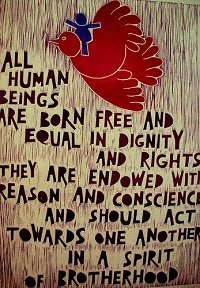

|
|
|
Browsing
Contact Us |
Campaigners |
Face to Face |
Tribune |
Interview |
News |
On the Web |
One Million |
Report
Farsi | Français | German | Italian | Spanish | العربية Also in this section
|
 Human Rights Iran Includes Gender Identity and Sexual Rights – Not Discriminationby Elaheh Amani Saturday 18 June 2011 View online : Women News Network On May 17th, 1990 the World Health Organization’s made a decision to remove homosexuality from the list of mental disorders. Since then, each year May 17th is considered the International Day against Homophobia. This year organizations and communities in more than 70 countries of the world will focus on education and outreach against homophobia and transphobia. The International Day against Homophobia is officially recognized by the European Parliament as well as the governments of Spain, Belgium, the United Kingdom, The Netherlands, France, Italy, Brazil and other countries. In 2011, on May 17th Iranian activists and their allies will embark on a campaign “We are everywhere” to talk openly and boldly against homophobia. The recognition of this day by the World Health Organization came six years after the idea was initially launched in 2004. Two years later, in 2006, in response to widespread human rights abuse and violence, a distinguished group of international human rights experts met in Yogyakarta, Indonesia to outline a set of international principles relating to sexual orientation and gender identity. The result was the Yogyakarta Principles: a universal guide to human rights which affirms binding international legal standards with which all international States must comply. These standards promise a different future where all people are born free and equal in dignity and rights and can fulfill their precious birthright. The Yogyakarta Principles were developed unanimously and adopted by a distinguished group of human rights experts from diverse regions and backgrounds. The document provides a blueprint for the international instruments and jurisprudence upon which each principle is based and is a valuable guide to the legal framework underpinning each principle. Although not explicitly forming part of the text adopted by the participating experts, the Annotations serve as a valuable guide to the legal framework underpinning each principle. The full text of the Yogyakarta Principles in all 6 UN languages can be found at www.yogyakartaprinciples.org and are shared in a condensed form here: The Yogyakarta Principles (The finalised Yogyakarta Principles were launched as a global charter for gay rights on 26 March 2007 at the United Nations Human Rights Council in Geneva). Principle 1: the right to the universal enjoyment of human rights. Principle 2: the rights to equality and non-discrimination Principle 3: the right to recognition before the law Principle 4: the right to life Principle 5: the right to security of the person Principle 6: the right to privacy Principle 7: the right to freedom from arbitrary deprivation of liberty Principle 8: the right to a fair trial Principle 9: the right to treatment with humanity while in detention Principle 10: the right to treatment with humanity while in detention Principle 11: the right to protection from all forms of exploitation, sale and trafficking of human being. Principle 13: the right to social security and to other social protection measure Principle 14: the right to an adequate standard of living Principle 15: the right to adequate housing Principle 16: the right to education Principle 17: the right to the highest attainable standard of health Principle 18: protection from medical abuse Principle 19: the right to freedom of opinion and expression Principle 21: the right to freedom of thought, conscience and religion Principle 22: the right to freedom of movement Principle 23: the right to seek asylum Principle 24: the right to found a family Principle 25: the right to participate in public life Principle 26: the right to participate in cultural life Principle 27: the right to promote human rights Principle 28: the right to effective remedies and redress Principle 29: accountability Since December 10th 1948 when United Nation General Assembly adopted and proclaimed the Universal Declaration of Human Rights diverse human rights issues and categories have been expanded considerably. Minority rights is one of the emerging discourses today in human rights scholarship. But what does this mean? Minority rights mean embracing the humanity of difference. Minority rights and human rights are among the new social movements of our time. The civil-rights of members of the international LGBT community face many challenges that other social movements not facing. Freedom in sexual orientation is a relatively recent notion in human rights law and clearly one of the most controversial ones in politics. The negative stereotypes and discrimination against what is not “the norm” are deeply embedded in our value system and patterns of behavior. From the United States to South Africa; from Iran to Serbia, homophobic prejudice remains in a manner that would be unacceptable for racial, ethnic or religious minorities, despite the presence of “anti-discrimination” laws for people with diverse gender identity. Theocracies such as those in Iran that challenge the rights and dignity of members of religious minorities who follow the religions of the Bahá’í, Judaism or even certain diversities of Islam – such as Sufism – are also being violated on daily basis. The situation for ethnic minorities such as the Kurds, Arabs and Azari’s are no better. Their rights and dignities are also being violated and undermined explicitly or implicitly. The core principles guiding a human rights approach on minority rights relate to non-discrimination and equality. True human rights advocates seek to ensure respect and dignity for members of all minority groups worldwide including LGBT communities. They also strive to expand the role of international human rights law as a formidable adversary of persecution and discrimination throughout the world. It is essential for human rights defenders to have a comprehensive understanding of the meaning of human rights, civil rights and to whom do they belong. Understanding and defending human rights can cause advocates to face challenges. This is because not all violations of human rights and all forms of discrimination receive the same attention and treatment. The offenders are not only international State authorities but many non-governmental organizations, public or private organizations and groups. Many share a non-adherence to accepting the full diversity of the human rights discourse. While the Iranian government openly and shamelessly denies the rights of ethnic, religious and gender identity minorities among the Iranians opposed to the Islamic Republic of Iran and even among intellectuals claiming to be secular, there is a great need of education and re-education on various aspects of human rights violations including minority rights. Defending the human rights of minorities often being ignored and disregarded come with arguments such as “… that is not important issue at this time” or “There are other more crucial issues”. The first human right is the right to be considered and treated as a human being. In spite of this, minority groups of political, social, sexual orientation, ethnicity and religion are being dehumanized by those who allow themselves to create a culture of fear. Intimidation based on “not being norm” is in the words of historian C. Vann Woodward, the “Permission-to-hate”. While the consciousness of the world has risen on human rights violations more people everyday are claiming their rights and dignity. Even with this, violations of rights and dignity is still widespread. These violations impact a wide range of the citizens of our world. Across the globe, a different sexual orientation and gender identity leads to human rights abuse. The abuse comes in the form of discrimination, violence, imprisonment, torture and even execution. Persecutions on the basis of sexual orientation and gender identity can take a variety of forms and can contravene the basic tenets of international human rights law. We learn in an article/report on the Global Network of Iranian Women that the Iranian “Rainbow Community” distributed brochures this year on the International Day against Homophobia. Brochures by the Rainbow Community about homophobia were distributed in Tehran and other cities in Iran. The articles also states: “…. the media in Diaspora that are enjoying more freedom in addressing various aspects of human rights violations and discriminations did not take full advantage of the opportunity to educate the public about homophobia.” LGBT activists who claim their rights and dignity, along with their allies in need, have been supported by many women, gender feminists and human rights activists during the last two decades. The issue of LGBT rights is not a recent proposition. Feminist activists inside the Iranian Diaspora have also had this issue on their radar. In annual conferences The Iranian Women’s Studies Foundation, as well as The Annual Conference of Iranian Women in Germany, have presented, discussed and debated the conditions of discrimination and human rights violations of the LGBT community inside Iran and among the Iranian Diaspora. In 2005, a formal statement signed by a number of bloggers, individuals along with organizations said: “Solving social problem(s) requires conscious and responsible participation of all citizens. The repression, prejudice, discrimination and injustice toward homosexuals is a social problem and the solution requires participation of all citizens regardless of their sexual orientation.” The May 2011 “We Are Everywhere” campaign once again brought voices from the margins to the center against homophobia and discrimination. A number of younger Iranians, many born and raised inside the Islamic Republic of Iran, including Ali Abdi, talked openly and boldly about their gender identity. During the campaign Iranian anti-discrimination and gender equality activists took a stand together against homophobia. In a new video posted on YouTube activist Ali Abdi stated: “Hi! My name is Ali! I am recording this video because of May 17th, which is the international day against homophobia and transphobia. Homophobia is about all those practices, discourses, and beliefs that discriminate against homosexuals, those that increase violence and abuse against homosexuals, bisexuals, transgender people and transsexuals.” “I wish living in a world in which those people who do not consider themselves as “heterosexual” are not regarded as unnatural, abnormal, or patient. I wish living in a world that nobody is abused because of her/his sexual orientation or gender performances.” “We, all standing beside each other, are members of a rainbow community without borders, and there are always opportunities and possibilities of improvisation in gender and sexual expressions.” In a world where human rights language is broadly accepted and being used and misused by revolutionary and counter-revolutionary movements building a movement with transparency, accountability and integrity, away from double standards and the rhetoric of the politician, face many challenges. The challenges can be found with human rights defenders and the Country States that offend those rights; with forces of occupation and those whose lands are being occupied; with imperial powers that are waging war and peace activists; with women who claim their basic human rights and the patriarchal dictatorships that deny those rights. Building a movement in Iran that embraces all categories of human rights harmoniously without any distinction from labor rights, to LGBT rights, to women’s and children’s rights, to the rights of the disabled and the rights of students, teachers, journalists and political prisoners is our only hope for a society free of discrimination. The plight of human rights defenders and the rainbow of activism for the dignity and rights of all Iranians should be free of discriminations!
During the UN 4th World Conference on Women in Beijing in 1995, Elahe presented a paper entitled, Women’s Human Rights and Islam. While chair of the President Commission on the Status for Women at California State University Long Beach, she attended a post-Beijing Conference in Cuba in 1998 and conducted two workshops. She attended Beijing Plus Five in summer of 2000 in New York,. Since the Beijing conference, Amani has conducted workshops and facilitated numerous dialogues and sessions at local and global conferences. Amani was also a member of the Women Intercultural Network US Delegation to Afghanistan in May 2003. Amani has also served on the advisory board of the First International Kurdish Women Conference in Kurdistan on March 8th, 2007 and served on the global advisory Board of the “Stop Stoning Forever Campaign” in Iran. She also works closely with the “One Million Signature to change discriminatory family laws in Iran and has been an expert panelist at the United Nations Commission on the Status of Women numerous times. Currently Amani is International Interest Chair of American Association of University Women in California and Director of Technology Services for the Division of Student Affairs at CSU Fullerton as an active on-campus mentor to help bring new and emerging technologies for teaching and learning to the Student Affairs professionals. She is also an unpaid volunteer reporter covering issues for women in Iran on Women News Network – WNN. |